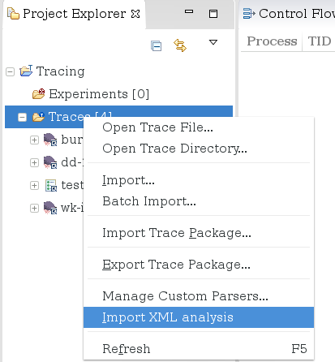
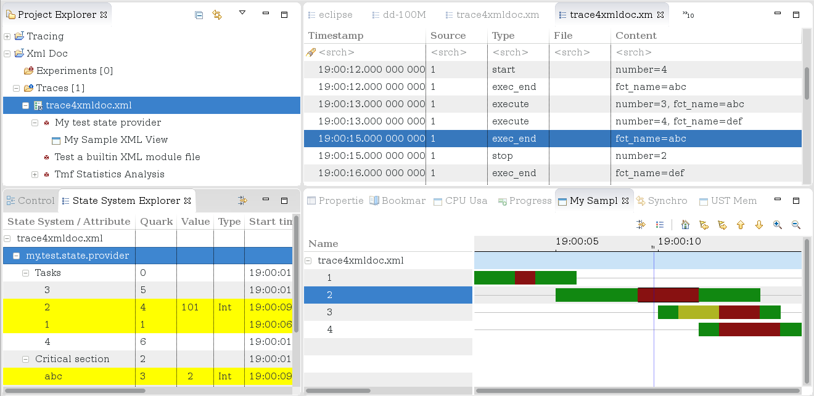
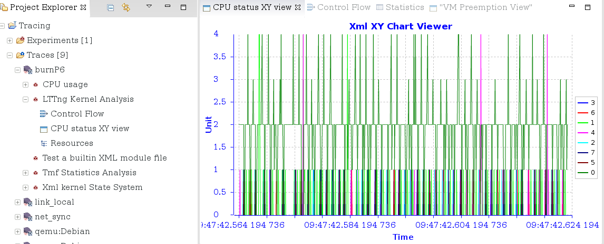

| Data driven analysis | ||
|---|---|---|
|
|
|
|
| Timestamp formatting | Limitations | |
It is possible to define custom trace analyses and a way to view them in an XML format. These kind of analyses allow doing more with the trace data than what the default analyses shipped with TMF offer. It can be customized to a specific problem, and fine-tuned to show exactly what you're looking for.
If you already have an XML file defining state providers and/or views, you can import it in your TMF workspace by right-clicking on the Traces or Experiments folder and selecting Import XML Analysis.

You will be prompted to select the file. It will be validated before importing it and if successful, the new analysis and views will be shown under the traces for which they apply. You will need to close any already opened traces and re-open them before the new analysis can be executed.
Right now, there is no way to "unimport" analyses from within the application. A UI to manage the imported analyses is currently being worked on. In the meantime, you can navigate to your workspace directory, and delete the files in .metadata/.plugins/org.eclipse.linuxtools.tmf.analysis.xml.core/xml_files .
To define XML components, you need to create a new XML file and use the XSD that comes with the XML plugin.
For now, the XSD is only available through the source code in org.eclipse.linuxtools.tmf.analysis.xml.core/src/org/eclipse/linuxtools/tmf/analysis/xml/core/module/xmlDefinition.xsd.
An empty file, with no content yet would look like this:
<?xml version="1.0" encoding="UTF-8"?>
<tmfxml xmlns:xsi="http://www.w3.org/2001/XMLSchema-instance"
xsi:noNamespaceSchemaLocation="xmlDefinition.xsd">
</tmfxml>
The state system is a component of TMF which can track the states of different elements of the system over the duration of a trace. To build this state system, events have to go chronologically through a state provider, which defines what changes are caused by the event to the system.
The state system obtained by the state provider can then be used to populate data-driven views without having to re-read the trace, or to query specific timestamps in the trace without needing to access the trace file.
Before we start, we'll define a few terms used in the following sections. The interested reader should read the Tmf Developer Guide for more complete description of the state system and state providers.
In the following sections, we'll use an example trace with the following events:
The first thing to do is to determine the attribute tree we'll use to represent the model of the system. The attribute tree is like a file system with directories and files, where files are logically gathered in the same parent directory. There is no one good way to build a tree, the logic will depend on the situation and on the person defining it.
The generated state system may be used later on to populate views, so attributes of the tree could be grouped in such a way as to make it easy to reach them with a simple path. The view will then be more simple.
In our example case, we'll want to track the status of each task and, for each critical section, which task is running them.
|- Tasks
| |- 1
| |- 2
| ...
|- Critical section
|- Crit_sect1
|- Crit_sect2
...
Then we determine how each event will affect the state of the attributes. But first, let's ask ourselves what values should each state take.
Let's see with the tree:
|- Tasks -> Empty
| |- 1 -> Each task can be in one of
| |- 2 RUNNING, CRITICAL, WAITING
| ...
|- Critical section -> Empty
|- Crit_sect1 -> Each critical section will hold the currently running task number
|- Crit_sect2
...
Then we determine how each event will affect the state of the attributes. In the attribute paths below, elements in {} are values coming from the trace event, while strings are constants. For the sake of simplicity, we'll say "update attribute", but if an attribute does not exist, it will be created.
Once the model is done at a high level, it is time to translate it to an XML data-driven analysis. For details on how to use each XML element, refer to the documentation available in the XSD files. Some elements will be commented on below.
First define the state provider element.
The "version" attribute indicates which version of the state system is defined here. Once a state provider has been defined for a trace type, it will typically be used by a team of people and it may be modified over time. This version number should be bumped each time a new version of the state provider is published. This will force a rebuild of any existing state histories (if applicable) whose version number is different from the current one.
The "id" attribute uniquely identifies this state provider, and the analysis that will contain it.
<stateProvider version="0" id="my.test.state.provider">
Optional header information can be added to the state provider. A "traceType" should be defined to tell TMF which trace type this analysis will apply to. If no tracetype is specified, the analysis will appear under every trace. A "label" can optionally be added to have a more user-friendly name for the analysis.
<head>
<traceType id="my.trace.id" />
<label value="My test analysis" />
</head>
If pre-defined values will be used in the state provider, they must be defined before the state providers. They can then be referred to in the state changes by name, preceded by the '$' sign. It is not necessary to use pre-defined values, the state change can use values like (100, 101, 102) directly.
<definedValue name="RUNNING" value="100" /> <definedValue name="CRITICAL" value="101" /> <definedValue name="WAITING" value="102" />
The following event handler shows what to do with the event named start. It causes one state change. The sequence of stateAttribute elements represents the path to the attribute in the attribute tree, each element being one level of the tree. The stateValue indicates which value to assign to the attribute at the given path. The "$RUNNING" value means it will use the predefined value named RUNNING above.
Suppose the actual event is start(3). The result of this state change is that at the time of the event, the state system attribute "Tasks/3" will have value 100.
<eventHandler eventName="start">
<stateChange>
<stateAttribute type="constant" value="Tasks" />
<stateAttribute type="eventField" value="number" />
<stateValue type="int" value="$RUNNING" />
</stateChange>
</eventHandler>
The full XML file for the example above would look like this:
<?xml version="1.0" encoding="UTF-8"?>
<tmfxml xmlns:xsi="http://www.w3.org/2001/XMLSchema-instance" xsi:noNamespaceSchemaLocation="../../org.eclipse.linuxtools.tmf.analysis.xml.core/src/org/eclipse/linuxtools/tmf/analysis/xml/core/module/xmlDefinition.xsd">
<stateProvider version="0" id="my.test.state.provider">
<head>
<traceType id="my.trace.id" />
<label value="My test analysis" />
</head>
<definedValue name="RUNNING" value="100" />
<definedValue name="CRITICAL" value="101" />
<definedValue name="WAITING" value="102" />
<eventHandler eventName="start">
<stateChange>
<stateAttribute type="constant" value="Tasks" />
<stateAttribute type="eventField" value="number" />
<stateValue type="int" value="$RUNNING" />
</stateChange>
</eventHandler>
<eventHandler eventName="execute">
<stateChange>
<stateAttribute type="constant" value="Tasks" />
<stateAttribute type="eventField" value="number" />
<stateValue type="int" value="$CRITICAL" />
</stateChange>
<stateChange>
<stateAttribute type="constant" value="Critical section" />
<stateAttribute type="eventField" value="fct_name" />
<stateValue type="eventField" value="number" />
</stateChange>
</eventHandler>
<eventHandler eventName="wait">
<stateChange>
<stateAttribute type="constant" value="Tasks" />
<stateAttribute type="eventField" value="number" />
<stateValue type="int" value="$WAITING" />
</stateChange>
</eventHandler>
<eventHandler eventName="exec_end">
<stateChange>
<stateAttribute type="constant" value="Tasks" />
<stateAttribute type="query">
<stateAttribute type="constant" value="Critical section" />
<stateAttribute type="eventField" value="fct_name" />
</stateAttribute>
<stateValue type="int" value="$RUNNING" />
</stateChange>
<stateChange>
<stateAttribute type="constant" value="Critical section" />
<stateAttribute type="eventField" value="fct_name" />
<stateValue type="null" />
</stateChange>
</eventHandler>
<eventHandler eventName="stop">
<stateChange>
<stateAttribute type="constant" value="Tasks" />
<stateAttribute type="eventField" value="number" />
<stateValue type="null" />
</stateChange>
</eventHandler>
</stateProvider>
</tmfxml>
To debug the state system that was generated by the XML state provider, one could use the State System Explorer View, along with the events editor. By selecting an event, you can see what changes this event caused and the states of other attributes at the time.
If there are corrections to make, you may modify the XML state provider file, and re-import it. To re-run the analysis, you must first delete the supplementary files by right-clicking on your trace, and selecting Delete supplementary files.... Check you analysis's .ht file, so that the analysis will be run again when the trace is reopened. The supplementary file deletion will have closed the trace, so it needs to be opened again to use the newly imported analysis file.
If modifications are made to the XML state provider after it has been "published", the version attribute of the xmlStateProvider element should be updated. This avoids having to delete each trace's supplementary file manually. If the saved state system used a previous version, it will automatically be rebuilt from the XML file.
A time graph view is a view divided in two, with a tree viewer on the left showing information on the different entries to display and a Gantt-like viewer on the right, showing the state of the entries over time. The Control Flow View is an example of a time graph view.
Such views can be defined in XML using the data in the state system. The state system itself could have been built by an XML-defined state provider or by any pre-defined Java analysis. It only requires knowing the structure of the state system, which can be explored using the State System Explorer View (or programmatically using the methods in ITmfStateSystem).
In the example above, suppose we want to display the status for each task. In the state system, it means the path of the entries to display is "Tasks/*". The attribute whose value should be shown in the Gantt chart is the entry attribute itself. So the XML to display these entries would be as such:
<entry path="Tasks/*">
<display type="self" />
</entry>
But first, the view has to be declared. It has an ID, to uniquely identify this view among all the available XML files.
<timeGraphView id="my.test.time.graph.view">
Optional header information can be added to the view. analysis elements will associate the view only to the analysis identified by the "id" attribute. It can be either the ID of the state provider, like in this case, or the analysis ID of any analysis defined in Java. If no analysis is specified, the view will appear under every analysis with a state system. The label element allows to give a more user-friendly name to the view. The label does not have to be unique. As long as the ID is unique, views for different analyses can use the same name.
<head>
<analysis id="my.test.state.provider" />
<label value="My Sample XML View" />
</head>
Also, if the values of the attributes to display are known, they can be defined, along with a text to explain them and a color to draw them with. Note that the values are the same as defined in the state provider, but the name does not have to be the same. While in the state provider, a simple constant string makes sense to use in state changes. But in the view, the name will appear in the legend, so a user-friendly text is more appropriate.
<definedValue name="The process is running" value="100" color="#118811" /> <definedValue name="Critical section" value="101" color="#881111" /> <definedValue name="Waiting for critical section" value="102" color="#AEB522" />
Here is the full XML for the time graph view:
<tmfxml xmlns:xsi="http://www.w3.org/2001/XMLSchema-instance" xsi:noNamespaceSchemaLocation="../../org.eclipse.linuxtools.tmf.analysis.xml.core/src/org/eclipse/linuxtools/tmf/analysis/xml/core/module/xmlDefinition.xsd">
<timeGraphView id="my.test.time.graph.view">
<head>
<analysis id="my.test.state.provider" />
<label value="My Sample XML View" />
</head>
<definedValue name="The process is running" value="100" color="#118811" />
<definedValue name="Critical section" value="101" color="#881111" />
<definedValue name="Waiting for critical section" value="102" color="#AEB522" />
<entry path="Tasks/*">
<display type="self" />
</entry>
</timeGraphView>
</tmfxml>
The following screenshot shows the result of the preceding example on a test trace. The trace used, as well as the XML file are available here.

An XY chart displays series as a set of numerical values over time. The X-axis represents the time and is synchronized with the trace's current time range. The Y-axis can be any numerical value.
Such views can be defined in XML using the data in the state system. The state system itself could have been built by an XML-defined state provider or by any pre-defined Java analysis. It only requires knowing the structure of the state system, which can be explored using the State System Explorer View (or programmatically using the methods in ITmfStateSystem).
We will use the LTTng Kernel Analysis on LTTng kernel traces to show an example XY chart. In this state system, the status of each CPU is a numerical value. We will display this value as the Y axis of the series. There will be one series per CPU. The XML to display these entries would be as such:
<entry path="CPUs/*"> <display type="constant" value="Status" /> <name type="self" /> </entry>
But first, the view has to be declared. It has an ID, to uniquely identify this view among all the available XML files.
<xyView id="my.test.xy.chart.view">
Like for the time graph views, optional header information can be added to the view. analysis elements will associate the view only to the analysis identified by the "id" attribute. It can be either the ID of the state provider, like in this case, or the analysis ID of any analysis defined in Java. If no analysis is specified, the view will appear under every analysis with a state system. The label element allows to give a more user-friendly name to the view. The label does not have to be unique. As long as the ID is unique, views for different analyses can use the same name.
<head>
<analysis id="org.eclipse.linuxtools.lttng2.kernel.analysis" />
<label value="CPU status XY view" />
</head>
Here is the full XML for the XY Chart that displays the CPU status over time of an LTTng Kernel Trace:
<tmfxml xmlns:xsi="http://www.w3.org/2001/XMLSchema-instance" xsi:noNamespaceSchemaLocation="../../org.eclipse.linuxtools.tmf.analysis.xml.core/src/org/eclipse/linuxtools/tmf/analysis/xml/core/module/xmlDefinition.xsd"> <xyView id="my.test.xy.chart.view"> <head> <analysis id="org.eclipse.linuxtools.lttng2.kernel.analysis" /> <label value="CPU status XY view" /> </head> <entry path="CPUs/*"> <display type="constant" value="Status" /> <name type="self" /> </entry> </xyView> </tmfxml>
The following screenshot shows the result of the preceding example on a LTTng Kernel Trace.

|
|

|
|
| Timestamp formatting | Limitations |